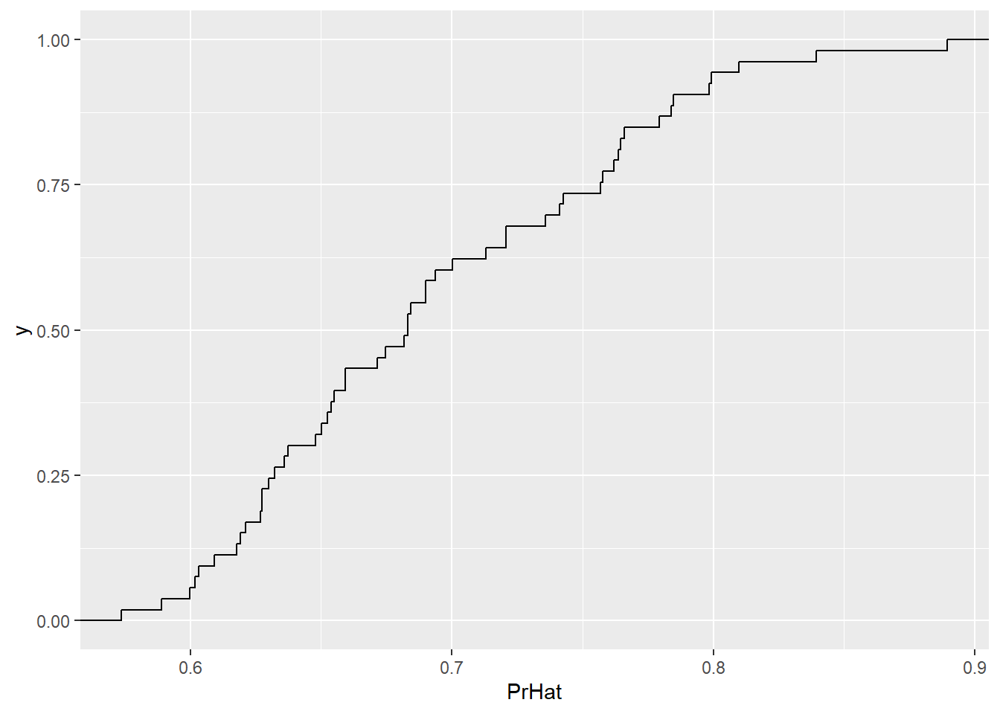
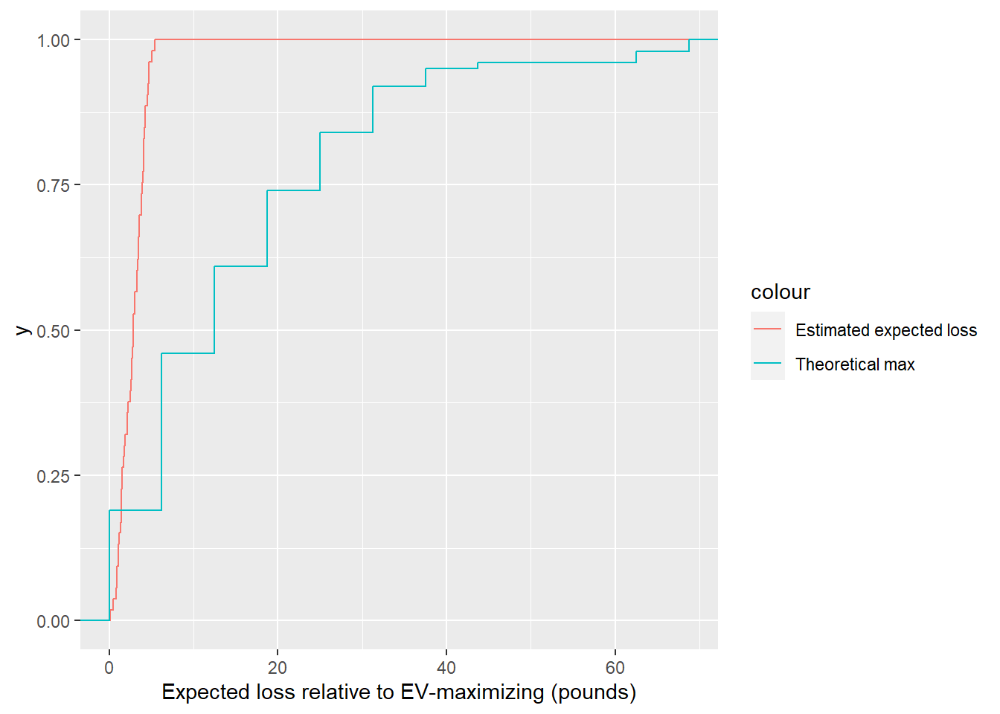
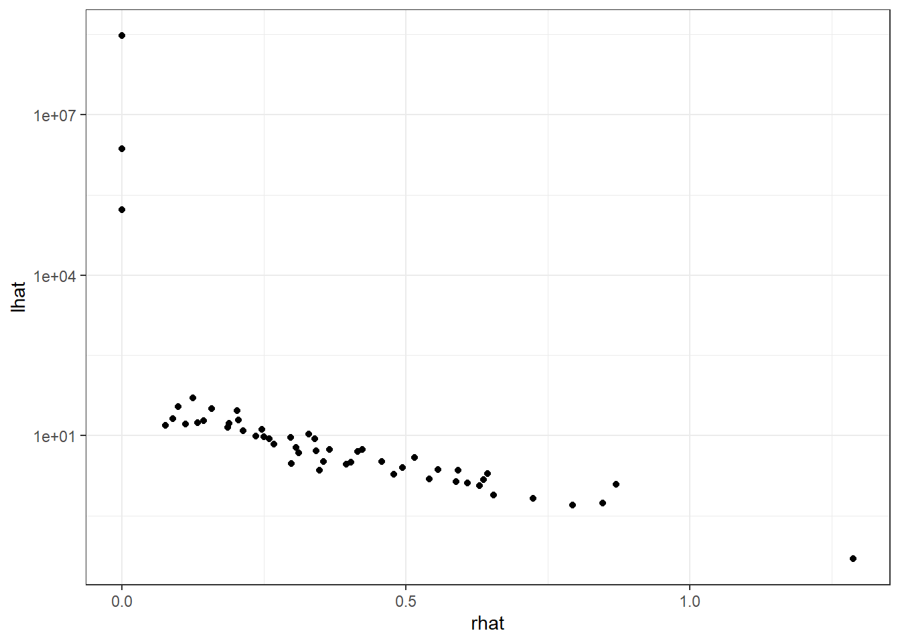

4 Behavioral econometrics
4.1 Example dataset
library(foreign)
library(ggplot2)
library(dplyr)
library(tidyr)
Hey2001<- read.csv("../2021ECON5820/Hey2001.csv")
knitr::kable(head(Hey2001))| id | t | q1 | q2 | q3 | q4 | p1 | p2 | p3 | p4 | y |
|---|---|---|---|---|---|---|---|---|---|---|
| 1 | 1 | 0 | 0 | 0.875 | 0.125 | 0 | 0.125 | 0.000 | 0.875 | 0 |
| 1 | 2 | 0 | 0 | 0.875 | 0.125 | 0 | 0.125 | 0.000 | 0.875 | 0 |
| 1 | 3 | 0 | 0 | 0.875 | 0.125 | 0 | 0.125 | 0.500 | 0.375 | 1 |
| 1 | 4 | 0 | 0 | 0.875 | 0.125 | 0 | 0.375 | 0.000 | 0.625 | 0 |
| 1 | 5 | 0 | 0 | 0.875 | 0.125 | 0 | 0.375 | 0.125 | 0.500 | 1 |
| 1 | 6 | 0 | 0 | 0.875 | 0.125 | 0 | 0.375 | 0.250 | 0.375 | 1 |
- decisions over 2 lotteries. \(p\) or \(q\)
- \(y=1\) iff \(i\) chooses the q-lottery in decision \(t\)
- prizes: 0, 50, 100, 150 pounds
4.2 Risk neutral
Maximization problem \[ \max_l\{E[u(X\mid l)]\} \]
Probabilistic choice function. Given choice set \(\mathbb A\) (softmax) \[ \Pr\left(l\right)\propto \exp\left(\lambda E[u(x)\mid l]\right) \]
- As the utility of one action increases, I am more likely to take it.
- Interpretations
- I make mistakes, but I recognize big payoff differences better than small ones
- There is a random component to my utility (observed by the decision-maker but not econometrician)
- There is a component of my utility that is not modeled well by \(E[u(x)\mid l]\)
Since we have only 2 choices, this becomes:
\[ \begin{aligned} \Pr(y=1\mid p,q)&=\frac{\exp(\lambda E[u(x)\mid q])}{\exp(\lambda E[u(x)\mid q])+\exp(\lambda E[u(x)\mid p])}\\ &=\left(1+\exp\left(\lambda\left(E[u(x)\mid p]-E[u(x)\mid q]\right)\right)\right)^{-1} \end{aligned} \]
log-likeihood function: \[ \mathcal L(\theta)=\sum_{t=1}^T\Pr(y_t\mid p_y,q_t) \]
For risk-neutral: \(u(x)=x\)
library(dplyr)
D<-(Hey2001
%>% mutate(EVq = 0*q1+50*q2+100*q3+150*q4,
EVp = 0*p1+50*p2+100*p3+150*p4
)
%>% mutate(DEV = EVq-EVp)
)
head(D)## id t q1 q2 q3 q4 p1 p2 p3 p4 y EVq EVp DEV
## 1 1 1 0 0 0.875 0.125 0 0.125 0.000 0.875 0 106.25 137.50 -31.25
## 2 1 2 0 0 0.875 0.125 0 0.125 0.000 0.875 0 106.25 137.50 -31.25
## 3 1 3 0 0 0.875 0.125 0 0.125 0.500 0.375 1 106.25 112.50 -6.25
## 4 1 4 0 0 0.875 0.125 0 0.375 0.000 0.625 0 106.25 112.50 -6.25
## 5 1 5 0 0 0.875 0.125 0 0.375 0.125 0.500 1 106.25 106.25 0.00
## 6 1 6 0 0 0.875 0.125 0 0.375 0.250 0.375 1 106.25 100.00 6.25Define and maximize likelihood:
LL<-function(lambda,DEV,y) {
# somthing in here to change DEV to DEU
sum(-log(1+exp((-1)^y*lambda*DEV)))
}
LL(1,D$DEV,D$y)## [1] -78116.31lambdaHat<- optimize(function(x) {-LL(x,D$DEV,D$y)}, c(0, 1))
print(lambdaHat)## $minimum
## [1] 0.06112392
##
## $objective
## [1] 15170.624.3 Estimate a \(\lambda_i\) for every subject (split by ID)
lambdaHat<-function(DEV,y) {
optimize(function(x) {-LL(x,DEV,y)}, c(0, 1))$minimum
}
print(lambdaHat(D$DEV,D$y))## [1] 0.06112392LambdaHatEstimates<-(D
%>% group_by(id)
%>% summarize(lhat = lambdaHat(DEV,y)))
LambdaHatEstimates %>% head() %>% knitr::kable()| id | lhat |
|---|---|
| 1 | 0.0293029 |
| 2 | 0.0461682 |
| 3 | 0.0412640 |
| 4 | 0.1111173 |
| 5 | 0.0374135 |
| 6 | 0.1656475 |
(
ggplot(LambdaHatEstimates,aes(x=lhat))
+stat_ecdf()
)
In context: \[ \Pr(\text{chooses y to max DEV})=(1+\exp(-\lambda |\mathrm{DEV}|)^{-1} \] on average, a subject will choose the “right” action with probability \[ \frac{1}{T}\sum_{t=1}^T(1+\exp(-\lambda |\mathrm{DEV}_t|)^{-1} \]
LogitResponse<-function(l,DEV) {
mean(1/(1+exp(-l*abs(DEV))))
}
EVloss<-function(l,DEV) {
p<-(1/(1+exp(-l*abs(DEV))))
mean(p*0+(1-p)*abs(DEV))
}
LambdaHatEstimates<-(D
%>% left_join(LambdaHatEstimates,by="id")
%>% group_by(id)
%>% summarize(PrHat = LogitResponse(lhat,DEV),
EVloss = EVloss(lhat,DEV),
lhat = mean(lhat))
)
LambdaHatEstimates %>% head() %>% knitr::kable()| id | PrHat | EVloss | lhat |
|---|---|---|---|
| 1 | 0.6032170 | 4.663298 | 0.0293029 |
| 2 | 0.6500962 | 3.537870 | 0.0461682 |
| 3 | 0.6374532 | 3.826159 | 0.0412640 |
| 4 | 0.7619261 | 1.450055 | 0.1111173 |
| 5 | 0.6269719 | 4.073668 | 0.0374135 |
| 6 | 0.8097907 | 0.812481 | 0.1656475 |
(
ggplot(LambdaHatEstimates,aes(x=PrHat))+stat_ecdf()
)
(
ggplot()
+stat_ecdf(data=LambdaHatEstimates,aes(x=EVloss,color="Estimated expected loss"))
+stat_ecdf(data=D,aes(x=abs(DEV),color="Theoretical max"))
+xlab("Expected loss relative to EV-maximizing (pounds)")
)
4.4 Adding in risk aversion
Expected utility in vector form: \[ \begin{aligned} u(x)&=(u(x_1),u(x_2),\ldots)\\ p&=(p_1,p_2,p_3,p_4)\\ q&=(q_1,q_2,q_3,q_4)\\ E[u(X)\mid p]&=p^\top u(x)\\ E[u(X)\mid q]&=q^\top u(x)\\ DEU(u,p,q)&=(q-p)^\top u(x) \end{aligned} \]
prizes<-c(0,50,100,150)
LL<-function(params,p,q,y) {
r<-exp(params[1])
lambda<-exp(params[2])
Ux<-as.matrix(prizes^r)
EUq<-as.matrix(q) %*% Ux
EUp<-as.matrix(p) %*% Ux
DEU<-EUq-EUp
sum(-log(1+exp((-1)^as.matrix(y)*lambda*DEU)))
}
p<-D %>% dplyr::filter(id==1) %>% dplyr::select(p1:p4)
q<-D%>% dplyr::filter(id==1) %>% dplyr::select(q1:q4)
y<-D %>% dplyr::filter(id==1) %>% dplyr::select(y)
EUHat<-function(p,q,y) {
exp(optim(c(log(0.5),log(0.7)),function(x) {-LL(x,p,q,y)})$par)
}
Estimates<-(D
%>% group_by(id)
%>% summarize(rhat = EUHat(p,q,y)[1],
lhat = EUHat(p,q,y)[2])
)
#Estimates %>% head() %>% knitr::kable()
library(latex2exp)
(
ggplot(Estimates,aes(x=rhat,y=lhat))+geom_point()
+theme_bw()
#+xlab(TeX("$\\hat r$"))+ylab(TeX("$\\hat\\lambda$"))
+ylim(c(0,exp(10)))
+scale_y_continuous(trans="log10")
)
4.5 Certainty equivalents:
Lottery induced by behaving according to parameters \(r\) and \(\lambda\) \[ \begin{aligned} \Pr(y_t=1\mid r,\lambda)&=(1+\exp(\lambda DEU_t(r)))^{-1} \end{aligned} \] Induced lottery for choice \(t\): \[ q_t\Pr(y_t=1\mid r,\lambda)+p_t\left(1-\Pr(y_t=1\mid r,\lambda)\right) \] what is the lottery of the entire experiment? \[ L=\frac{1}{T}\sum_{i=1}^T\left(q_t\Pr(y_t=1\mid r,\lambda)+p_t\left(1-\Pr(y_t=1\mid r,\lambda)\right)\right) \] Expected utility of experiment: \[ EU(\text{expt})=L^\top u(x) \] Certainty equivalent of an experiment: \[ CE(\text{expt})=u^{-1}\left(EU(\text{expt})\right) \]
From here, we can calculate:
- How much is the experiment worth to someone who behaves according to \((r,\lambda)\)?
- How much could it be worth if we shut down the noise (i.e. \(\lambda\to\infty\))?
- How much was the experiment worth based on their actual choices?
4.6 Hierarchical model
\[ \begin{aligned} \log(r_i,\lambda_i)&\sim N(\mu,\Sigma)\\ \mu_r&\sim N(\log 0.5,0.2^2)\\ \mu_\lambda&\sim N(\log 10,0.2^2)\\ \log\sigma_r&\sim N(\log(0.2),0.2^2)\\ \log\sigma_\lambda&\sim N(\log(0.2),0.2^2)\\ \mathrm{corr}(\log r_i,\log\lambda_i)&\sim 2\mathrm{Beta}(3,3)-1 \end{aligned} \]
d<-list(
id=D$id,
Q=D[,c("q1","q2","q3","q4")],
P=D[,c("p1","p2","p3","p4")],
y=D$y,
N = dim(D)[1],
n = length(unique(D$id)),
prizes = seq(0,1,length=4),
prior_r = c(log(0.5),0.2,log(0.2),0.2),
prior_l = c(log(10),0.2,log(0.2),0.2),
prior_corr = c(3,3)
)
library(rstan)
Fit<-stan("EstimateCRRA.stan",data=d,control = list(adapt_delta=0.99))
saveRDS(Fit,"Hey2001Hierarchical.rds")4.7 Further reading
Bland, J.R., 2020. Measuring and comparing two kinds of rationalizable opportunity cost in mixture models. Games, 11(1), p.1.
Alekseev, Aleksandr, Glenn W. Harrison, Morten Lau, and Don Ross. “Deciphering the noise: the welfare costs of noisy behavior.” (2019).